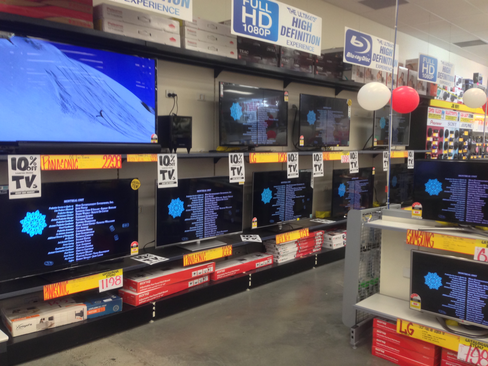
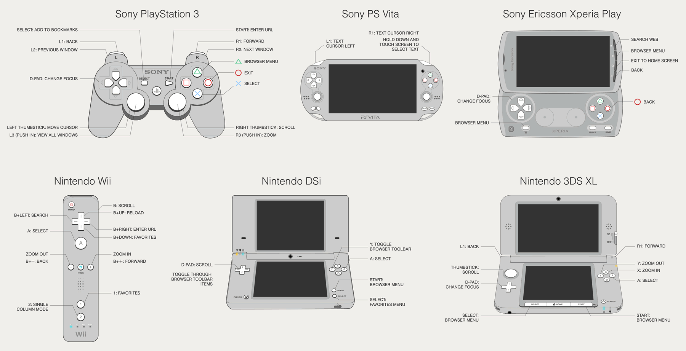
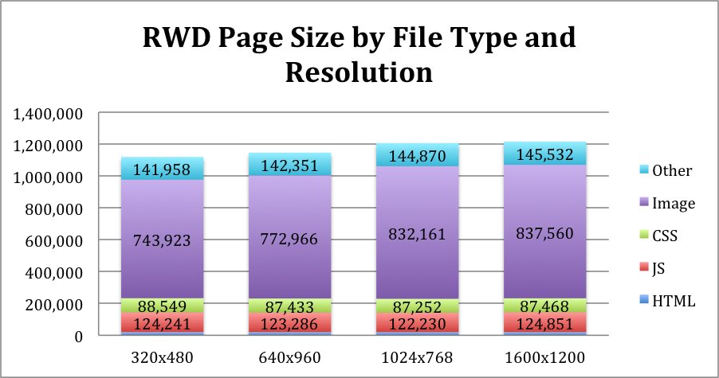
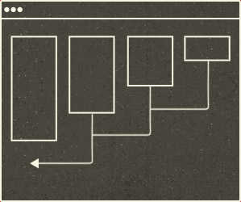
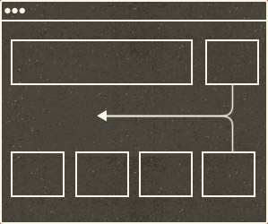

Current State of the Web:
and what to expect in the future
by Zendy Wongso
Developer's point of view
Follow along at http://zendy.github.io/current-state-of-the-web/
Does size matter anymore?
Tablet / Mobile phones
 http://www.coverupaccessories.com/giving-back/open-device-lab
http://www.coverupaccessories.com/giving-back/open-device-lab
Smart TVs
Game consoles
 http://alistapart.com/article/testing-websites-in-game-console-browsersBe Responsive
Is this the way to go?
Benefits:
Single content and layout
Only need to manage single content.
- m dot
- touch dot
- r dot
Accessibility
- no more device specific layout
- we might even install it on our devices in the future
SEO
Google recommends webmasters follow the industry best practice of using responsive web design, namely serving the same HTML for all devices and using only CSS media queries to decide the rendering on each device.
Pitfalls:
Performance
Images
- Desktop images
- Mobile images
- Retina images
 http://www.guypo.com/mobile/what-are-responsive-websites-made-of/
Content
Content Strategy
Need to make sure that our content still relevant in every device.
Content Choreography
  http://trentwalton.com/2011/07/14/content-choreography/Framework
Few other responsive pattern
- Navigation
- RESS
Testing
- How many devices are we going to buy?
- How much time are we going to spend on testing?
- Maybe we should share?
“We should embrace the fact that the web doesn't have the same constraint (as the printed page), and design for this flexibility.”
“Be Responsive as it is the way to the future! (not just because of iPhone/iPad)”
Credits
@hakimel, @guypod, @anna_debenham, @adactio, @beep, @johnallsopp, @brad_frost, @TrentWalton
Further Reads
http://alistapart.com/article/responsive-web-design http://alistapart.com/article/dao http://mobile.smashingmagazine.com/2013/05/29/the-state-of-responsive-web-design http://screensiz.es/
Thank you
Follow us on:
Twitter: http://twitter.com/beresponsive
Facebook: http://on.fb.me/13sMcOu
LinkedIn: http://linkd.in/19XdHVi
Twitter: http://twitter.com/zendywongso